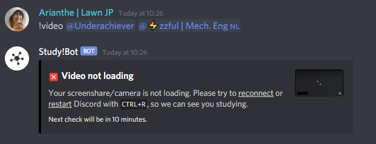
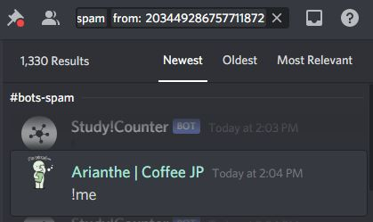

First and Foremost
This manual explains you the necessary commands with common examples, which you can use as a reference. Before starting, check the servers rules here: https://discordstudy.com/rules/
Now, as you’ll see in the Support Server (from here I’ll call it SS), there are channels with usernames. Whenever a member sends a DM to @Staff Support bot, a new thread with their names gets created. When dealing with each thread, there are specific commands that are used commonly. Feel free to send a DM to Staff Support to test everything out.
Inside a user thread:
!r or !reply followed by <text> - Common way to send a reply to the user. The reply is sent with the nickname you have is SS.
!close <time> -Closes the modmail thread. If a time is specified, the thread is scheduled to be closed later. Scheduled closing is cancelled if a message is sent to or received from the user.
!logs <page> -Lists previous modmail logs with this user. If there are a lot of logs, they will be paginated. In this case, you can specify the page number to view as an argument.
!alert -Pings you when the thread gets a new reply. Use !alert cancel to cancel.
!tags - Shows the list of templates
!tag <tagname> - Brings the template of called tag
Anywhere on the SS:
!newthread <userID> - Opens a new thread with the specified user !logs <userID><page> - Lists previous modmail logs with the specified user. If there are a lot of logs, they will be paginated. In this case, you can specify the page number to view as the second argument.
As mentioned above, we have template answers for the most common questions or issues. All templates can be edited depending on the thread before sending them, especially the ones with XXXXX mark should be edited accordingly. Here is the list of them:
- closed
- excessivedata
- impropergoal
- movedafk
- video
- nonstudyactivity
- music
- banned
- videosilent
- studybuddy
- inactivestream
- serverad
- channelid
- namechange
- bots
closed – Shows the message to send to the user before closing their thread.
excessivedata – If a member shows excessive hours of studying (for example: 20h/24h), they get disregarded from the leaderboard. However, it’s only Nadir who can access the data, so most of the time you won’t need to use this template.
impropergoal – As stated in the rules, certain type of session goals, such as “same”, “asdasf” are not accepted. Goals such as “I’m crying”, “nothing”, “brb”, “coffee” etc. are not accepted either. In case of a user posting such goals, you can simply open their thread manually, and use this template to warn them.
movedafk – If a user is afk for over 15m, you can move them to break/afk call and send this message.
video – when a member’s camera/screenshare is not loading properly and if they didn’t fix it after being notified, you can move them to break/afk and send this message.
nonstudyactivity – if a member is caught doing non-study activity for over 10m(longer than a break), you can disconnect them from the call and send this message.
music – template for the question “how can I use the music bots”
banned – message to send when a user is banned. However moderators don’t have the permission to ban a user, therefore this template is mostly used by other staff members.
videosilent – an alternative to video template. The difference is, you use this one if you decided to move the member to silent/self study call, instead of brak/afk call. This is used if you think the member might be just focused and didn’t receive your notification.
inactivestream – if there’s no activity on stream window for over 15m (no page change, no cursor movement, etc), you can move them to break/afk call and send this message.
serverad – when a user tries to send a discord link, their message gets deleted by the bots. This message is used to warn them, however moderators cannot access that data, therefore you won’t be using it.
channelid – brings the ID numbers of the necessary channels
namechange – when a member change their username, their stats goes back to 0.00h, in this case the system transfers their data from old username to the new one. However since this process can take hours, they send a message to the staff when they see their stats are gone. This is the message you can send to them.
Bots – we often get questions about the bots and if how to find them. This message is the answer to those.
Now, example cases:
Inactive stream for 3-4 minutes -> Most people do reading and note taking from a pdf file, and doesn’t show any activity. First we ask them to show activity if they’re present by using !afk <@user> in the in-server screenshare/camera chat.

If they don’t show any activity, or don’t react to the message within 10 minutes, that’s when we move them out of the call and message them through SS by using inactivestream template.
- Video/videosilent -> If the user’s video is not loading, we notify them with !video <@user> first and if they don’t fix it within 10m, we move them out of the call and message them. 
-Unmute requests -> We also get unmute requests from people. Half of the time, it’s when they use a filtered word and get muted by the bot. In some cases, the bot matches a syllable with a filtered word (ie: cockroach), and wrongfully mutes the person. In this case we can unmute them, and suggest them to censor the word. If it’s not a wrongful mute, then we tell them that they’ll get unmuted automatically in an hour.
In other half of the cases, it’s when people join a private or group call, and get muted by Study!Watcher before setting time. In this case aswell, we unmute them and remind them to be careful.
However, moderators doesn’t have access the data of the mute cases. And it’s not possible to confirm the way filtered word is used. Therefore it’s better to leave this to Gene, Totti and Nadir. If they are not online, you can tell the user that there’s noone online who can unmute them, and that they have to wait.
- Namechange -> This one is a bit confusing. When stats look like they got reset, it happens due to namechange. However it’s because their data is just being transferred. The user doesn’t understand the reason behind it and they say “my stats are suddenly gone”. First, we have to make sure that the reason is indeed namechange, and not another technical issue. For that, we go to the search function, and search user ID number in: #command-spam and #bots-spam. This will show us their !me profile. 
And at the bottom of their profile you can see their username.
What we do is checking their past profile data and find one that shows their past correct study hours and see if the name is different. If there is indeed a name change, then we use the namechange template to answer and send it. If there is no namechange, then it’s a technical issue only Nadir can fix. In this case, we send the user a message saying we’ve forwarded the issue to the Management Team for investigation. It might be good to remind them that it might take a while due to different timezones etc.
Closing threads: If the question/issue of the user is fixed and if the user is notified, we close their threads. The threads forwarded to Management Team, or the thread in which the user is expecting a return shouldn’t be closed.
Permissions of a moderator:
- - Deleting the inappropriate messages, links, pictures
- - Server-muting or unmuting members
- - Moving or disconnecting people from calls
Banning a user: A moderator doesn’t have permissions to ban a user.
In cases when there’s a report towards someone, first thing we do is asking for proofs, such as screenshots of said claims.
In other cases such as a person sharing NSFW content, or flashing on camera, we first delete the post (or disconnect the person from the call), then server-mute the person in #mod-reports or in #support-team-commands (check #mod-tutorial for the commands) so that they won’t be able to text, screenshare, turn on camera or microphone. Then send the ID number/username of the person to SS and ping either Gene, Totti or Nadir, or all if none of them are online.
This is more or less all. You can always ping any of us while handling a thread and ask questions. When there are unique questions and if you know the answer, such as “what is cuckoo-forest”, you can send them the FAQ (https://discordstudy.com/faq/), or explain the answer as it is.